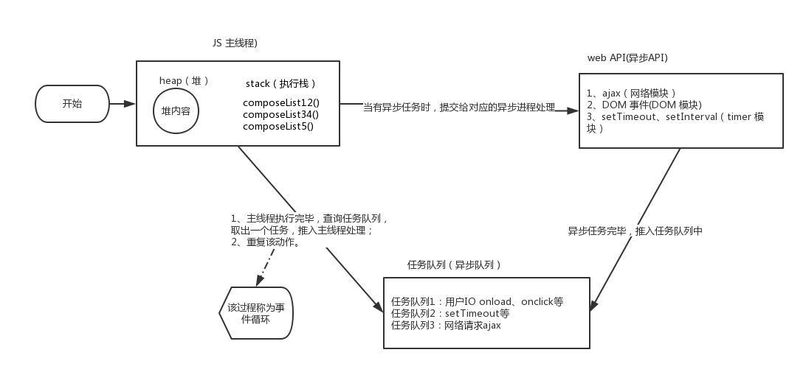

首先我们先来思考几个问题：
- 为什么 js 是单线程？
- 为什么需要异步？异步又是如何实现的？
- 什么是事件循环（Event Loop）?
一、js 为什么是单线程
Javascript 作为一种浏览器脚本语言，它需要操作 DOM，如果它是多线程语言，那将会出现很多复杂的问题。我们可以想象一下，如果 js 有两个线程，在同一时间，一个线程修改了某个 DOM 节点，而另一个线程删除了这个 DOM 节点，那么浏览器应该听谁的话呢？所以 js 单线程的特性基本没有改变的可能性。
随着现在 CPU 的性能增强，单线程无法充分发挥计算机的计算能力。H5 提供了 Web Worker 标准，为 JavaScript 创造多线程环境，允许主线程创建 Worker 线程，将一些任务分配给后者运行。但子线程完全受主线程控制，且不得操作 DOM。所以，这个新标准并没有改变 JavaScript 单线程的本质。
二、为什么需要异步以及异步的实现
“同步模式”就是程序从上到下按顺序执行，后一个任务等待前一个任务结束，然后再执行。如果前任务耗时很长，后面的任务都必须排队等着，这样就会拖延整个程序的执行。后面的代码就会被阻塞。对于用户而言,阻塞就意味着”卡死”,这样就导致了很差的用户体验。
“异步模式”则完全不同，每一个任务有一个或多个回调函数（callback），前一个任务结束后，不是执行后一个任务，而是执行回调函数，后一个任务则是不等前一个任务结束就执行，所以程序的执行顺序与任务的排列顺序是不一致的、异步的。
- 回调函数（易形成回调地狱，避免使用）
- 事件监听
- promise
- Generator 函数
- 优雅的 async/await
三、Event Loop

上图是事件循环示意图，具体流程如下：
- 主线程顺序执行代码，形成相应的堆和栈。
- 主线程遇到异步任务，指给对应的异步进程进行处理（WEB API）。
- 异步任务处理完成，将相应的异步任务推入任务队列。
- 主线任务执行完毕，查询任务队列，如果存在任务，就取出一个任务推入主线程（先进先出）。
以上四个步骤循环执行，就形成了事件循环。
宏任务和微任务
js 引擎将所有任务分为宏任务和微任务
宏任务：setTimeout，setInterval，setImmediate，ajax
微任务：process.nextTick，Promise.then
在事件循环中，每进行一次循环操作称为 tick，每一次 tick 的任务处理模型是比较复杂的，但关键步骤如下：
- 执行一个宏任务（栈中没有就从事件队列中获取）
- 执行过程中如果遇到微任务，就将它添加到微任务的任务队列中
- 宏任务执行完毕后，立即执行当前微任务队列中的所有微任务（依次执行）
- 当前宏任务执行完毕，开始检查渲染，然后 GUI 线程接管渲染
- 渲染完毕后，JS 线程继续接管，开始下一个宏任务（从事件队列中获取）
来看一道面试题帮助理解 (^_^)
1 | setTimeout(() => { |
浏览器执行 js，遇到 setTimeout 分发宏任务到 Event Queue 中。第一个宏任务进入主线程，直接输出 ’外层宏事件 1‘ ，然后 ‘外层宏事件 2’。执行完后开始执行被分发到微任务队列的 then，执行完所有微任务队列的事件后，开始执行下一个宏任务，输出 ‘内层宏事件’
1 | //正确答案 |